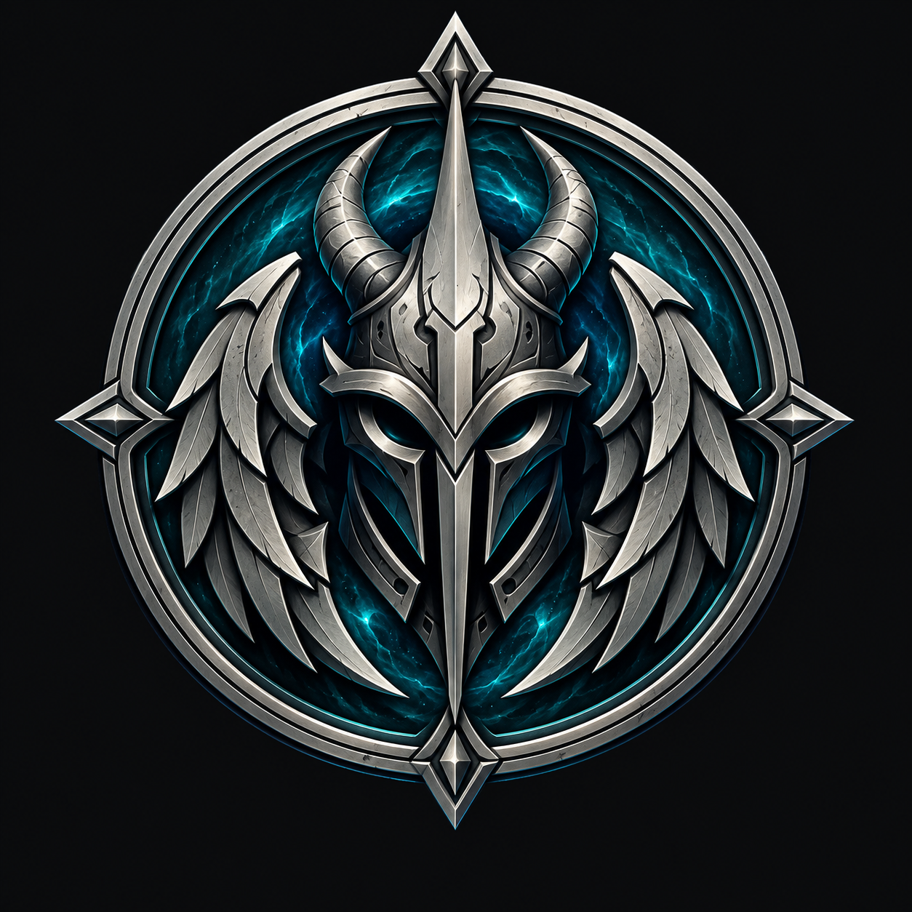
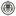
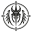

Перерисованы маска, рога и крылья-лезвия. Для названия выбран
Yeseva One — до будущего собственного шрифта Аркенхара. Сейчас оцениваем форму
знака, не выбираем шрифт заново.
01 / Коррекция формы
Оригинал рядом с двумя адаптациями
Цветной знак принят ранее. Форма новой пары А2/Б2 принята владельцем 2 ноября.
Оригинал сохранён; внедрение в приложение — отдельный этап.

Выбранный оригиналНе изменён

Прежний малый знак · БНе принят: слишком далеко от оригиналаНовая адаптация · Б2Для просмотра
Маска: вытянута вниз, разделены гребень, надбровье и нижнее острие.
Рога: восстановлен изгиб с широким основанием и тонким верхним концом.
Крылья: вместо двух крючков — каскад отдельных лезвий с прорезями.
Портал: четыре полых ромба; в малой версии — двойное кольцо.
Металлическая фактура, голубое свечение и мелкая резьба остаются
только в оригинале. Фон и прорези SVG прозрачные, а не закрашенные цветом подложки.
02 / Оптические размеры
Одна форма, две степени детализации
Вверху каждого образца — увеличение. Под ним — 16, 24, 32 и 48 CSS px.
Для оценки размеров установи масштаб браузера 100%. Читаемость ещё не подтверждена.
А2
Микро · проба для 16 px
Толще кольцо и перемычки, шире отверстия глаз, меньше внутренних линий.
Светлая поверхность

16 px24 px32 px48 px
Тёмная поверхность
16 px24 px32 px48 px
Б2
Малый · проба для 24–48 px
Двойное кольцо, прорези на рогах, больше разделений крыльев и маски.
Светлая поверхность

16 px24 px32 px48 px
Тёмная поверхность
16 px24 px32 px48 px
А2 и Б2 не являются отдельными направлениями айдентики. Это
оптическая пара одного выбранного знака; пригодность для каждого размера ещё нужно принять.
03 / Решение по названию
«Аркспейс» — Yeseva One
Выбор зафиксирован. Написание показано с новой адаптацией в крупной и
компактной связке. Позже шрифт можно заменить собственным АркенХаром —
когда будет готов отдельный согласованный файл.
Выбран владельцем
Yeseva One
400 · Временное написание до собственного шрифта Аркенхара.